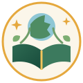
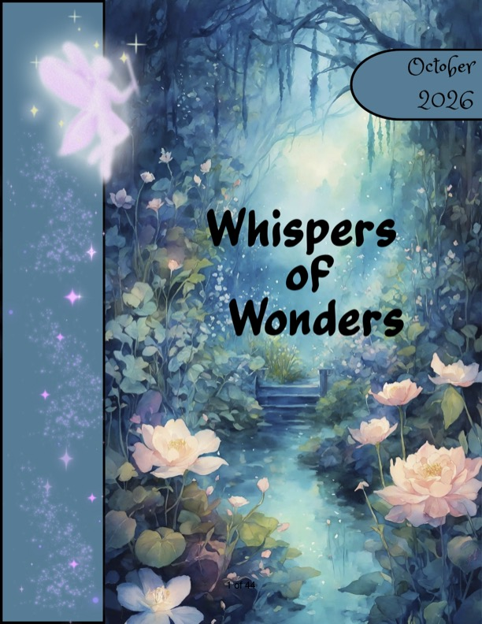
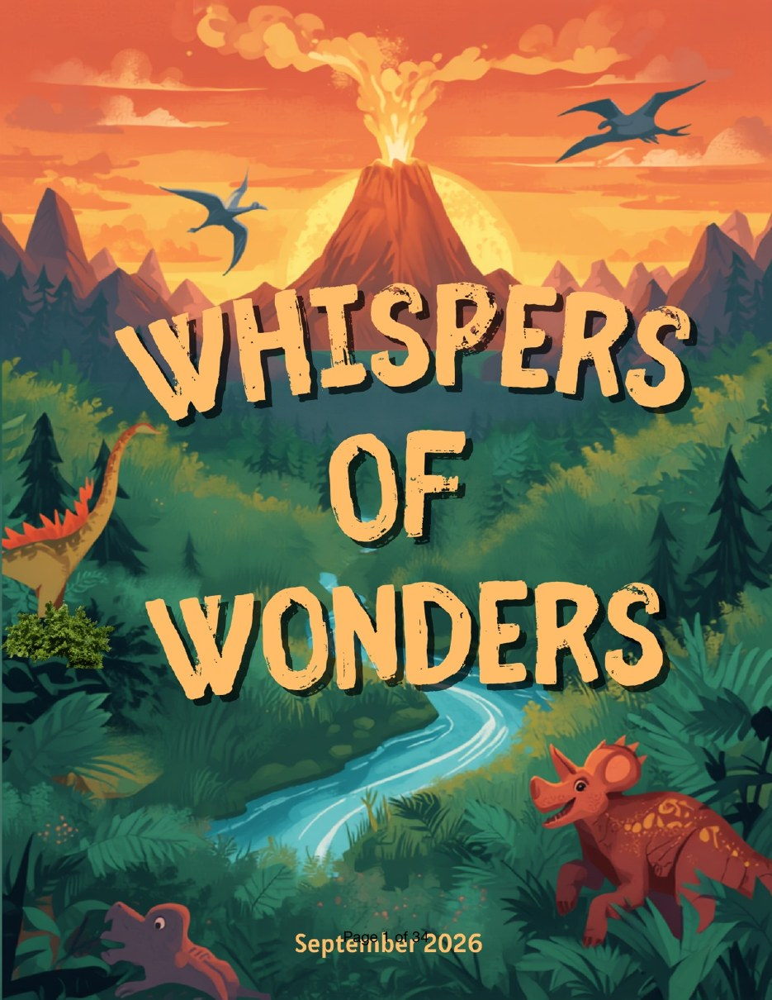
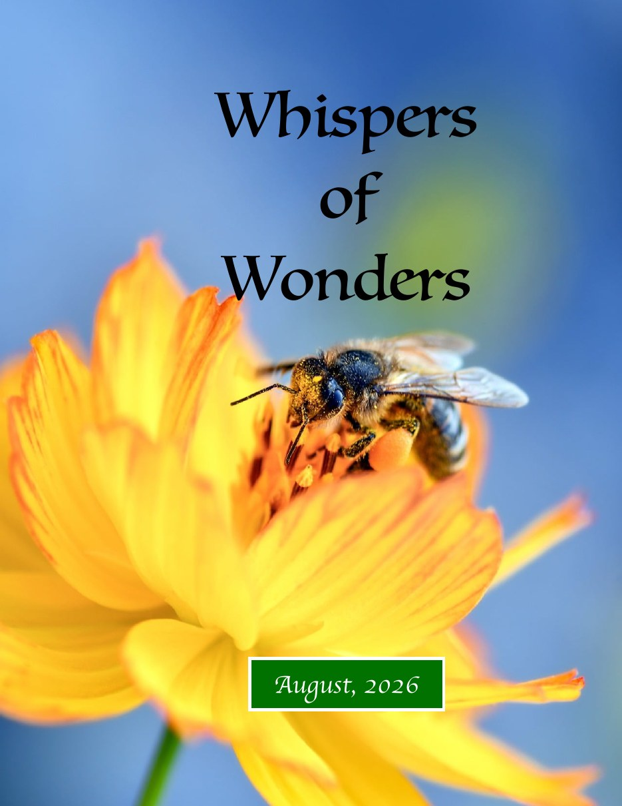
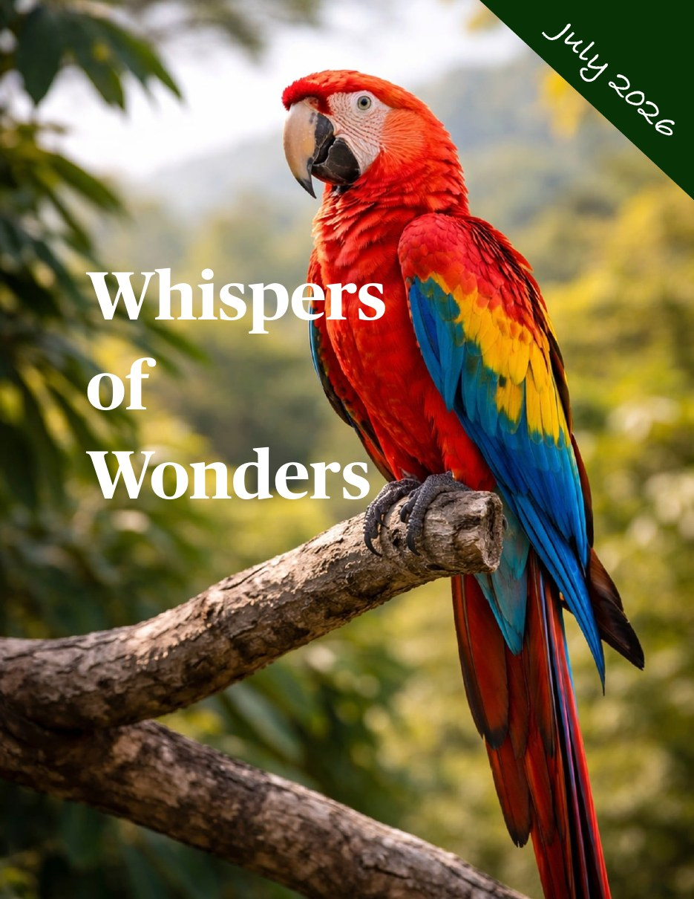
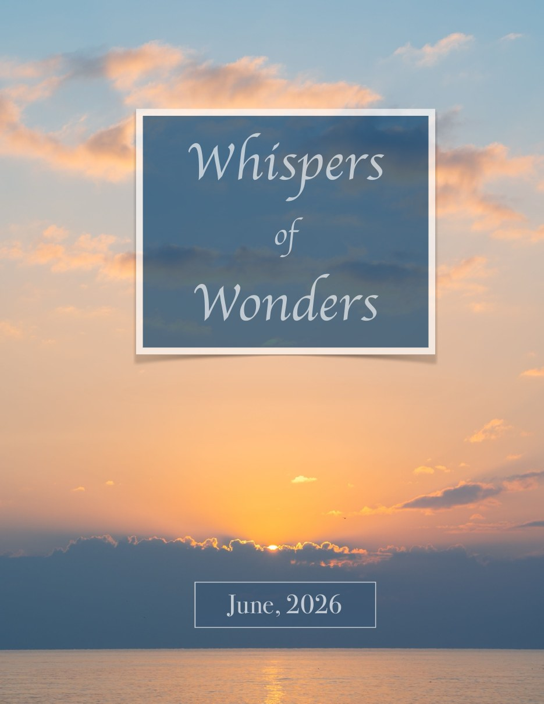
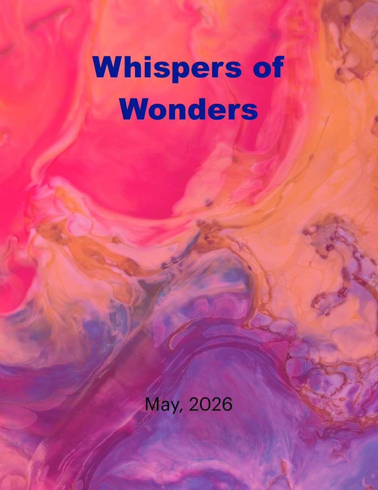

Ask
Start with a real question.

Whispers of WondersASK · WONDER · DISCOVER · CREATE
An independent children's magazine shaped by young minds—their curiosity, their voices, and the people who help them explore an astonishing world.

LATEST ISSUE · OCTOBER 2026
Where do stories come from—and how does imagination shape the worlds we create? Our young contributors explore magical creatures, moon tales from around the world, folklore, Tolkien's extraordinary imagination, animation and storytelling. Discover children's artwork, puzzles, research and conversations with authors and scholars.
Open October issue →ABOUT US
Whispers of Wonders is built around children's curiosity. Young contributors write, draw, investigate, invent puzzles and ask experts the questions they genuinely want answered. Adults help with research, editing and phrasing—but the curiosity belongs to the children.
Start with a real question.
Explore science, nature, history, books and culture.
Turn discoveries into stories, art and activities.
Bring children's questions to authors, scientists and experts.
CONVERSATIONS & RESEARCH COLLABORATIONS
Our young contributors learn directly from authors, artists and researchers. Some features are interviews; others grow from children's research and thoughtful exchanges with experts.
AUTHOR & ILLUSTRATOR · CHILDREN'S LITERATURE
An award-winning author and illustrator talks with young readers about childhood memories, Puerto Rico, family, illustration and the stories that connect us to our cultures.
Read the conversation →October 2026 · page 24ANIMATION · STORYTELLING
How does an idea become an animated world? Children explore the creativity, techniques and storytelling behind animation with Professor Wells.
Read the interview →October 2026 · page 29FOLKLORE · GEORGE MASON UNIVERSITY
Professor Zhang and her daughter Anna Yuan share insights about folktales, oral traditions, Chinese storytelling and how stories are passed on and transformed.
Read the conversation →October 2026 · page 19RESEARCH COLLABORATION · UNIVERSITY OF GLASGOW
In The Timeless Wonder of J. R. R. Tolkien, young investigator Debashis Chakraborty and fellow contributors explore Tolkien's imagination, with a reflection from Professor Fimi.
Read the children's article and scholar's reflection →October 2026 · page 17PALEOANTHROPOLOGY · SMITHSONIAN
Young readers asked about human origins, fossils, ancient diets and what it is really like to investigate our distant past.
Read the interview →Opens at the introduction to Dr. Pobiner's conversation.PALEOANTHROPOLOGY · GEORGE WASHINGTON UNIVERSITY
A conversation about fossils, ancient environments, fieldwork and how scientists reconstruct worlds that vanished millions of years ago.
Read the interview →Opens at the first page of Dr. Barr's interview.“The best questions are often the ones children are not afraid to ask.”
YOUNG VOICES
Questions, observations and explorations of the world around us.
Articles, stories, book reflections and imaginative adventures.
Drawings, paintings, photography and visual storytelling.
Mazes, riddles, mysteries and challenges made for curious minds.
THE ARCHIVE
Our journey began in May 2026. Each month opens a new door of curiosity.
Fairy tales, imagination, folklore, animation and magical worlds.
Read issue →
Dinosaurs, fossils, human origins and ancient worlds.
Read issue →
Nature, teamwork, perseverance, space and creativity.
Read issue →
Animals, space, discoveries, creativity and a conversation with a pilot.
Read issue →
Curiosity, discoveries and creative adventures.
Read issue →
The very first issue of Whispers of Wonders.
Read issue →WHERE CURIOSITY TAKES US
We rarely know where a child's first question will lead. That's the point.